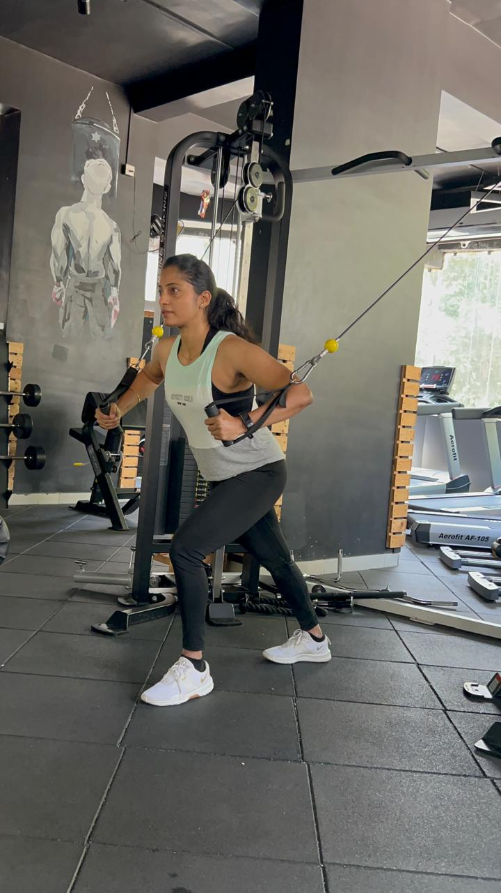
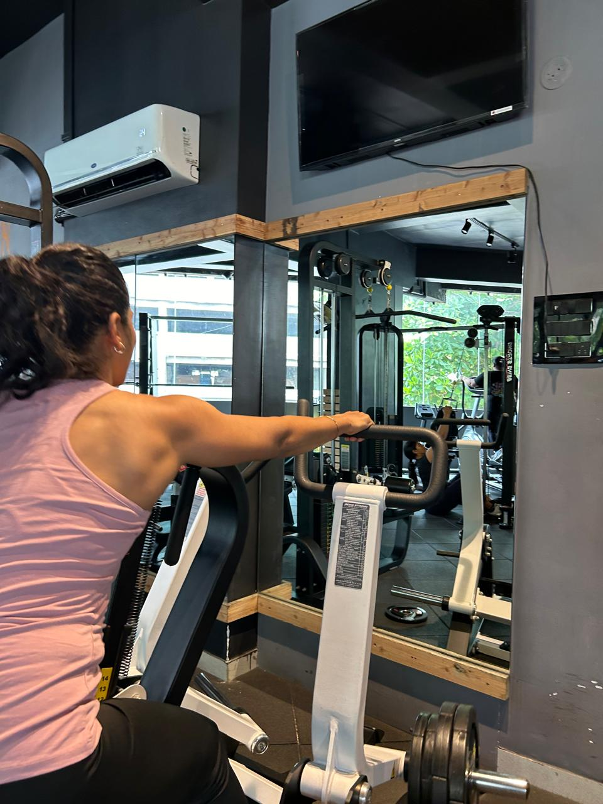
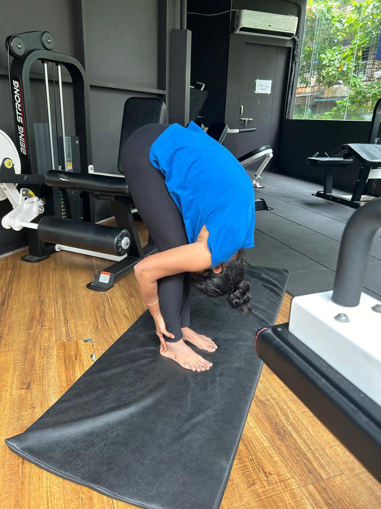

Vandana Yadav is a dedicated postpartum fitness specialist with a passion for helping new mothers regain their strength and confidence. With expertise in core recovery, strength training, and Diastasis Recti awareness, Vandana offers personalized fitness solutions tailored to each woman's unique needs.
Our Services
Postpartum Fitness
Customized workout plans designed specifically for new mothers, focusing on safe and effective exercises to rebuild strength and stamina.
Core Recovery
Specialized programs targeting abdominal muscles and pelvic floor, essential for postpartum recovery and overall well-being.
Diastasis Recti Support
Expert guidance and exercises to address Diastasis Recti, a common postpartum condition affecting the abdominal muscles.
Online Coaching
Flexible, personalized training sessions conducted online, allowing you to work out from the comfort of your home.
Training in Action



Experience Our Workouts
Energizing Postpartum Workouts
Discover the power of targeted exercises designed for new mothers.
Core Strengthening Techniques
Learn effective methods to rebuild your core strength after pregnancy.
Understanding Diastasis Recti: What Every New Mom Should Know
Diastasis Recti is a condition that affects many women during and after pregnancy, causing a separation in the abdominal muscles. This issue often leads to a persistent "pregnancy belly" even after giving birth. Understanding Diastasis Recti is the first step towards recovery.
What is Diastasis Recti? Diastasis Recti occurs when the abdominal muscles separate, leading to a weakened core. This is especially common in women after pregnancy, as the muscles stretch to accommodate the growing baby.
Why It Matters If left untreated, Diastasis Recti can lead to other complications, including back pain, poor posture, and in severe cases, hernias. It's important to address this issue with targeted exercises that focus on core recovery and overall strength.
How to Recover There are safe and effective exercises designed to close the abdominal gap, such as restorative core movements and yoga. Working with a fitness expert who specializes in postpartum fitness, like Vandana Yadav, can guide you through this recovery journey.
Conclusion Every new mom deserves to feel strong and confident. By focusing on core recovery and understanding Diastasis Recti, you can rebuild your body and regain your strength.
The Importance of Postpartum Fitness: How to Rebuild Your Body After Baby
The postpartum period can be challenging for many new moms as they adjust to life with a newborn. Alongside the emotional changes, your body is also going through a period of healing and recovery. Postpartum fitness plays a vital role in regaining strength and confidence after childbirth.
Why Postpartum Fitness Matters After giving birth, your body needs time to heal. Incorporating gentle exercises like yoga, pilates, or strength training can help rebuild your body safely. Postnatal fitness isn't about "bouncing back" quickly, but about restoring balance and strength.
Focus on Core and Pelvic Floor The pelvic floor and core muscles take a major hit during pregnancy. Exercises focusing on these areas can speed up recovery and prevent future issues like incontinence or back pain.
Fuel Your Body Right Nutrition is just as important as exercise. A balanced, nutrient-dense diet can support postpartum recovery, provide energy, and aid in healthy weight loss.
Conclusion Remember, every fitness journey is unique. Postpartum fitness is about celebrating progress and nurturing your body. Whether you're just starting or looking to enhance your routine, focus on building strength and confidence from the inside.
Creating a Fitness Routine That Works for Busy Moms
For busy moms, finding time to exercise can feel impossible. Between taking care of your baby, household responsibilities, and possibly returning to work, your schedule might seem overwhelming. However, fitting fitness into your life is possible with the right approach.
Time-Saving Workouts Short, effective workouts are a game-changer for busy moms. High-intensity interval training (HIIT) and functional training are both excellent options for burning calories and building strength in a short amount of time. You don't need hours at the gym to stay fit—30 minutes a day is enough.
Online Coaching for Convenience Many fitness programs, like the ones offered by Vandana Yadav, provide online coaching. This allows you to work out from home at your convenience while receiving guidance from an expert.
Functional Training for Daily Life Focus on workouts that prepare your body for the demands of motherhood. Functional training improves strength, balance, and flexibility, helping you handle tasks like lifting your baby or carrying groceries with ease.
Conclusion Fitness doesn't have to take a backseat to your busy life. By incorporating time-saving workouts and online coaching, you can prioritize your health and well-being. Embrace fitness as a tool to boost your energy and confidence as a mom.
Start Your Fitness Journey
Ready to transform your postpartum health and fitness? Get in touch with Vandana today for a personalized consultation.